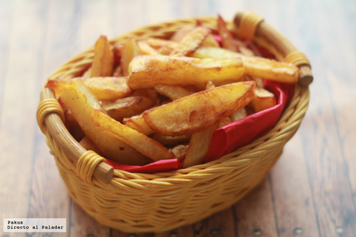

Patatas fritas
Receta de papatas fritas caseras.
Ingredientes
- 3 o 4 patatas (300g.)
- 4 dientes de ajo
- Aceite de oliva
- Sal
Elaboración (Pasos)
- Calentar aceite en una sartén.
- Añadir las patatas fritas cortas, la sal y los ajos
- Freir al gusto
- Servir en plato.